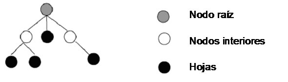
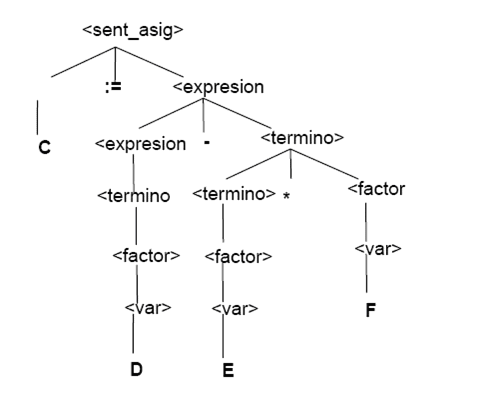
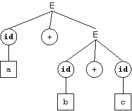
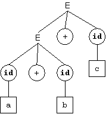

Un árbol de derivación (o árbol sintáctico) es una representación gráfica de como se deriva una forma sentencial a partir del símbolo no-terminal inicial.
Un árbol es un grafo dirigido acíclico en el cual cada nodo se conecta con un nodo distinguido, llamado nodo raíz mediante un único camino. Un nodo n 1 se dice descendiente de otro nodo n 2 si se puede llegar a n 1 a partir de n 1. El nodo raíz no es descendiente de ningún nodo, y los nodos que no tienen descendientes se denominan hojas. El resto de los nodos se denominan nodos interiores.

Un árbol de derivación tiene las siguientes propiedades:
- El nodo raíz está rotulado con el símbolo distinguido (inicial) de la Gramatica.
- Cada hoja corresponde a un símbolo terminal o un símbolo no-terminal.
- Cada nodo interior corresponde a un símbolo no-terminal.
Un arbol de derivación muestra gráficamente las derivaciones (substituciones de símbolos no terminales) que hay que llevar a cabo para llegar a una Forma Sentencial a partir del símbolo inicial.
| Las hojas en un arbol de derivación tomadas de izquierda a derecha constituyen una Forma Sentencial de la Gramatica subyacente. |
Ejemplos
La siguiente definición BNF describe en forma simplificada la sintaxis de una sentencia de asignación de un lenguaje tipo Pascal:
<sent_asig> ::= <var> ':=' <expresion>
<expresion> ::= <expresion> '+' <termino> | <expresion> '-' <termino> | <termino>
<termino> ::= <termino> '*' <factor> |<termino> '/' <factor> | <factor>
<factor> ::= ( <expresion> ) |<var> | <num>
<var> ::= 'A'..'Z'
<num> ::= '0'..'9'
Un arbol de derivación correspondiente a la sentencia:
C := D - E * F
es el siguiente:

Árboles de Derivación y Gramáticas Ambiguas
Una Gramatica Ambigua permite más de una Derivacion para la misma Forma Sentencial por lo que también habrá más de un árbol de derivación para la misma. Por ello basta con encontrar dos árboles derivación distintos para la misma Forma Sentencial para demostrar que una gramática es ambigua.
Ejemplo
Tal vez la instancia más famosa de una Gramatica Ambigua sea el del else ambiguo, el cual está presente en diversos lenguajes de programación como Pascal, C, y Java. Las sintaxis de las instrucciones if then else en Java puede especificarse con la siguiente gramática BNF simplificada:
<instr> ::= 'if' '(' <expre> ')' <instr> | 'if' <expre> <instr> 'else' <instr> | 'a' ';'
<expre> ::= 'e'
Dada la frase:
if (e) if (e) a; else a;
Pueden obtenerse dos derivaciones para la misma frase. Una es la que corresponde a la interpretación usual de los if anidados en los lenguajes de programación:
if (e) { if (e) a; else a; }
La otra es la que corresponde a la siguiente interpretación:
if (e) { if (e) a; } else a;
La ambigüedad puede resolverse escribiendo una nueva gramática:
<instr> ::= <instr_p> | <instr_n>
<instr_p> ::= 'if' '(' <expre> ')' <instr_p> 'else' <instr_p> | 'a' ';'
<instr_n> ::= 'if' '(' <expre> ')' <instr> | 'if' '(' <expre> ')' <instr_p> 'else' <instr_n>
lo cual hace mucho más dificil de entender el lenguaje descrito.
En la práctica, el problema del else ambiguo se resuelve con reglas de precedencia, o haciendo que esa parte del Analizador Sintactico se comporte de manera avara (greedy) y siempre trate de derivar la Forma Sentencial más larga.
Por ejemplo, si usamos la siguiente Gramatica:
<instr> ::= 'if' '(' <expre> ')' <instr> <elsepart> | 'a' ';'
<elsepart> ::= 'else' <instr> | ε
<expre> ::= 'e'
entonces un analizador sintáctico descendente recursivo escogerá la Derivacion esperada.
Ejemplo
Dada la siguiente gramática:
E → E + E
E → E - E
E → E * E
E → E / E
E → ( E )
E → id
Es posible construir dos árboles de derivación para la frase:
a + b + c
|  |  |
Es posible escribir la gramática para expresiones aritméticas introduciendo nuevos símbolos para los distintos niveles de precedencia de los operadores:
E → E + T
E → E - T
E → T
T → T * F
T → T / F
T → F
F → ( E )
E → id
La gramática resultante no es ambigua.
{kind=link}
{kind=link}
{kind=link}
{kind=link}